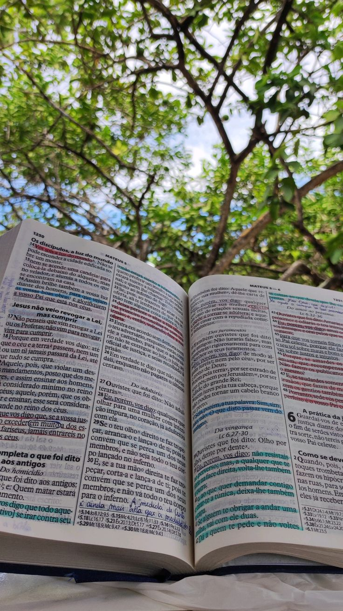

Mergulhe na Sabedoria.
Peniel — Encontro com Deus
Um espaço para ler, compreender e escrever. Seu devocional diário guiado pela sabedoria da Bíblia — fléxivel, pessoal e acessível.

Peniel — Encontro com Deus
Um espaço para ler, compreender e escrever. Seu devocional diário guiado pela sabedoria da Bíblia — fléxivel, pessoal e acessível.

Peniel é um lugar mencionado em Gênesis 32 — onde Jacó lutou com Deus até o amanhecer e saiu transformado. Ele chamou aquele lugar de Peniel: "porque vi a Deus face a face".
Mais do que um nome, Peniel representa um momento de intimidade o instante em que voçê para, respira e então entende a revelação das escrituras
Porque me viu a face de Deus e a minha vida foi preservada." — Gênesis 32:30